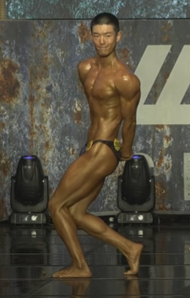
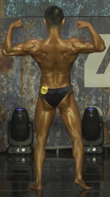
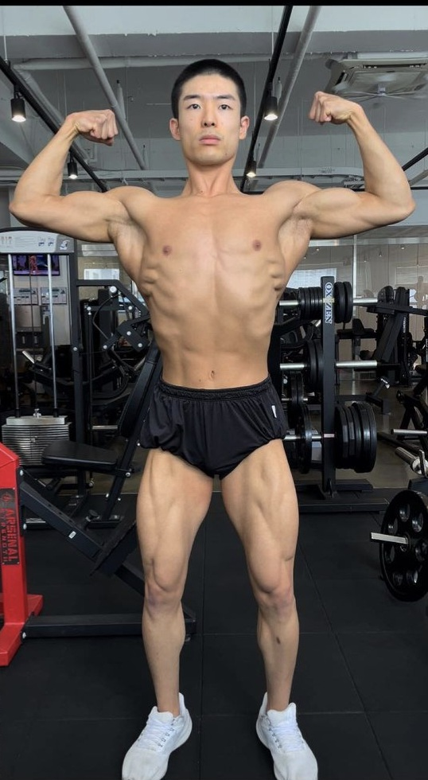
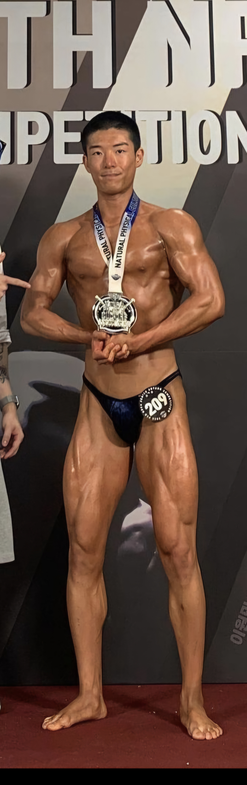
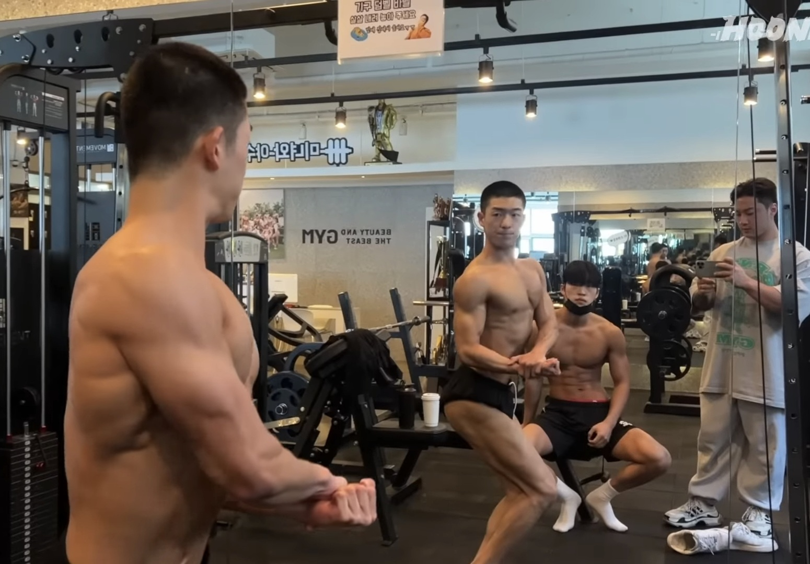
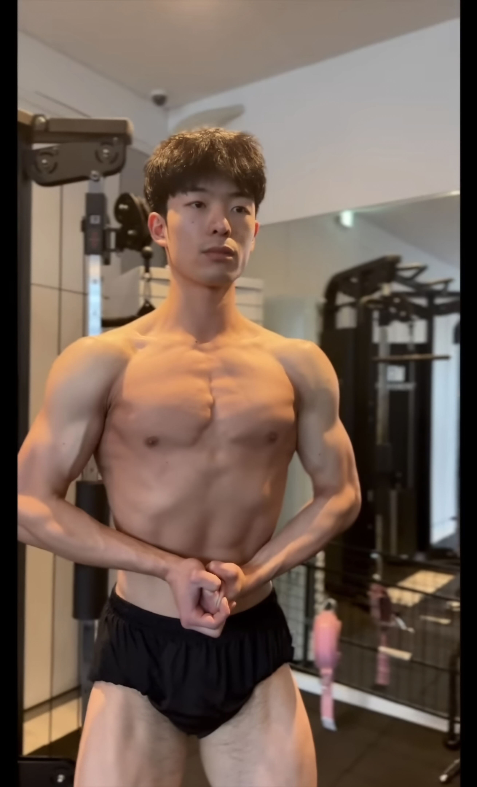
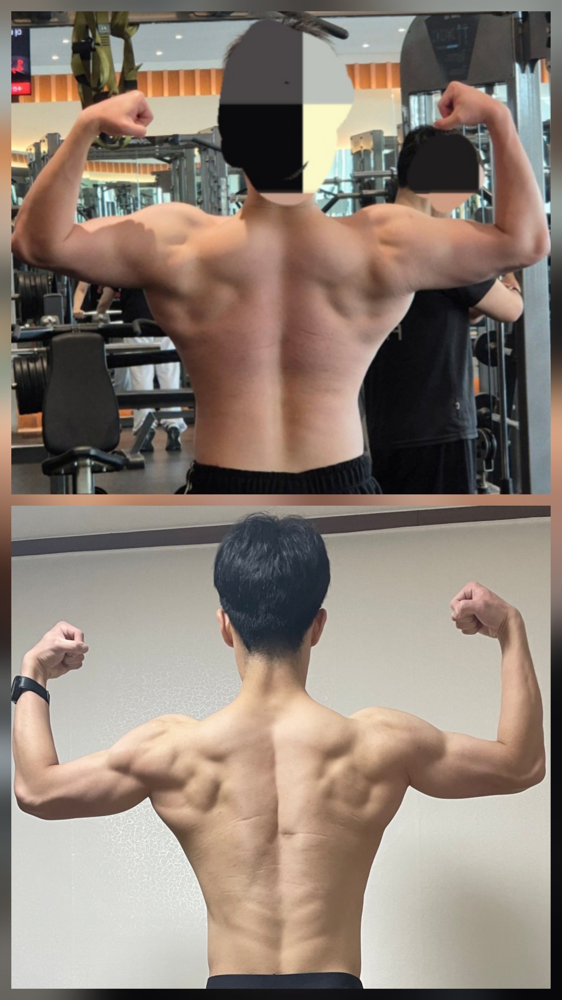
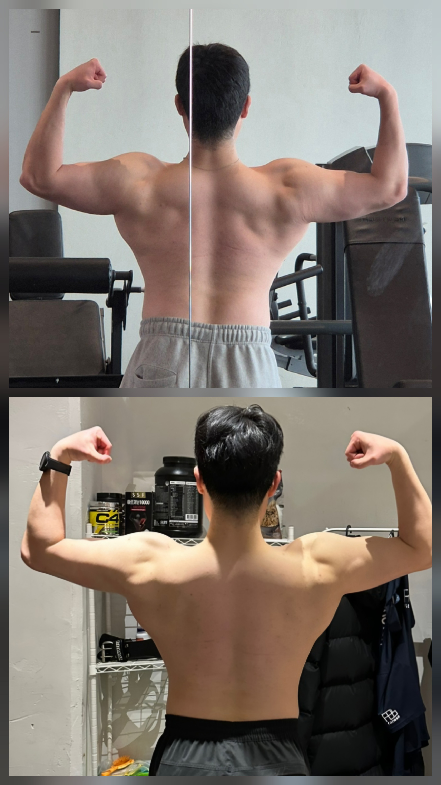
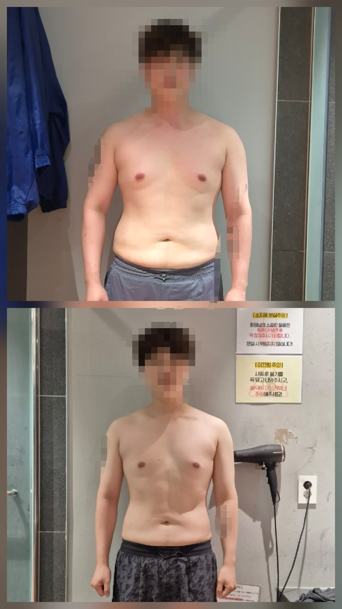
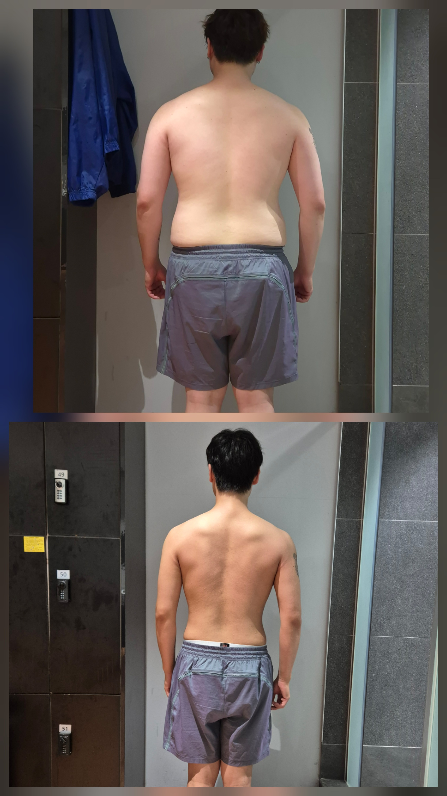

1986 FITNESS / CHAE JI HUN
스스로 바꾼 몸,
함께 키워갈 당신.
남성 벌크업 · 근력 향상
60kg 대회 준비부터 현재 95kg까지.

MY OWN TRANSFORMATION
직접 바꿔온 몸으로,
함께 만들어갈 변화.
60kg으로 대회를 준비하던 시기부터 현재 95kg까지. 채지훈 트레이너는 자신의 몸을 직접 키워온 벌크업 경험을 바탕으로 남성 회원님의 훈련을 함께합니다.
단순히 체중을 늘리는 것보다, 목표 부위에 힘을 쓰는 방법과 운동량·중량·회복을 조절하는 기준을 전합니다. 본인의 경험을 회원님의 출발점과 생활에 맞는 수업으로 연결합니다.
대회 준비부터 이어온 훈련의 기록






체중은 트레이너 제공 정보 기준입니다. 두 시점의 체중 차이를 근육 증가량으로 의미하지 않으며, 회원님의 목표와 진행 속도는 개인별로 다르게 설정합니다.
MY BULK-UP / 65 → 85 → 95 KG
몸을 키워온 과정,
두 번의 비교로 확인하세요.
채지훈 트레이너 본인의 벌크업 기록입니다.


체중은 제공 정보 기준이며, 체중 증가량이 곧 근육 증가량을 의미하지는 않습니다. 대회 준비 당시 60kg 기록과 별도로, 위 사진은 65→85kg 및 85→95kg 비교입니다.
MEMBER’S PROGRESS / 2 MONTHS
남성 회원님의
2개월 변화 기록.
정면과 후면으로 살펴보는 비포·애프터.
사진을 누르면 크게 볼 수 있습니다.


제공된 동일 회원의 2개월 전·후 사진입니다. 개별 사례이며, 모든 회원에게 같은 기간이나 결과를 보장하지 않습니다.
BUILD MUSCLE. BUILD STRENGTH.
몸을 키우고 싶은데,
어디서부터 바꿔야 할까요?
운동을 해도 몸의 변화가 더디다면
같은 중량에서 오래 머물고 있다면
목표 근육에 힘주는 감각이 어렵다면
혼자 운동할 루틴이 필요하다면
현재 운동 수준과 목표를 먼저 살펴봅니다. 근육 성장을 위한 운동량과 근력 향상을 위한 강도를 구분하고, 나에게 필요한 훈련을 구성합니다.
자세를 익히고, 수행을 기록하고, 다음 훈련을 조정합니다. 매번 힘들게 끝내는 운동을 넘어 무엇이 달라지고 있는지 확인하는 수업을 지향합니다.
MEN’S TRAINING
목표에 집중하는
두 가지 커리큘럼.
벌크업과 근력 향상.
누르면 자세한 수업 내용을 볼 수 있습니다.
BULK UP벌크업체중만 늘리는 것이 아니라, 근육을 키우는 방향으로.상세 커리큘럼 보기상세 접기+
STRENGTH근력 향상기본 자세부터, 더 안정적으로 다루는 중량까지.상세 커리큘럼 보기상세 접기+
훈련 강도와 진행 속도는 개인의 운동 경험과 컨디션에 맞춰 조정합니다.
START YOUR NEXT SET
키우고 싶은 몸,
넘어서고 싶은 기록.
현재 운동 루틴과 목표를 알려주세요.
벌크업과 근력 향상 중 필요한 방향부터 함께 정합니다.